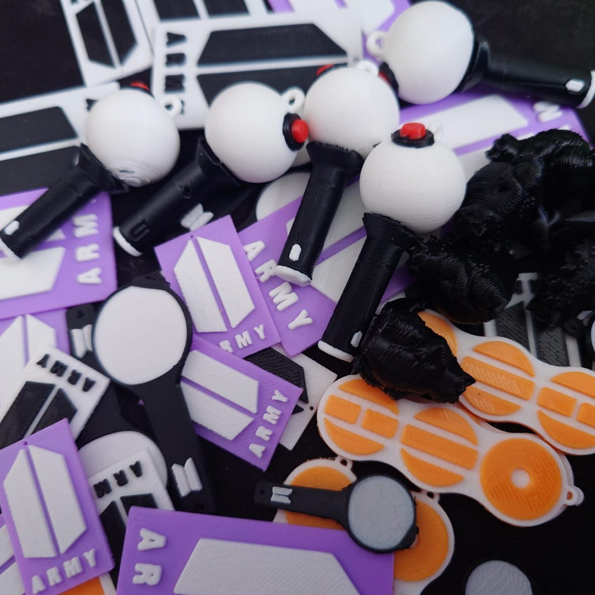
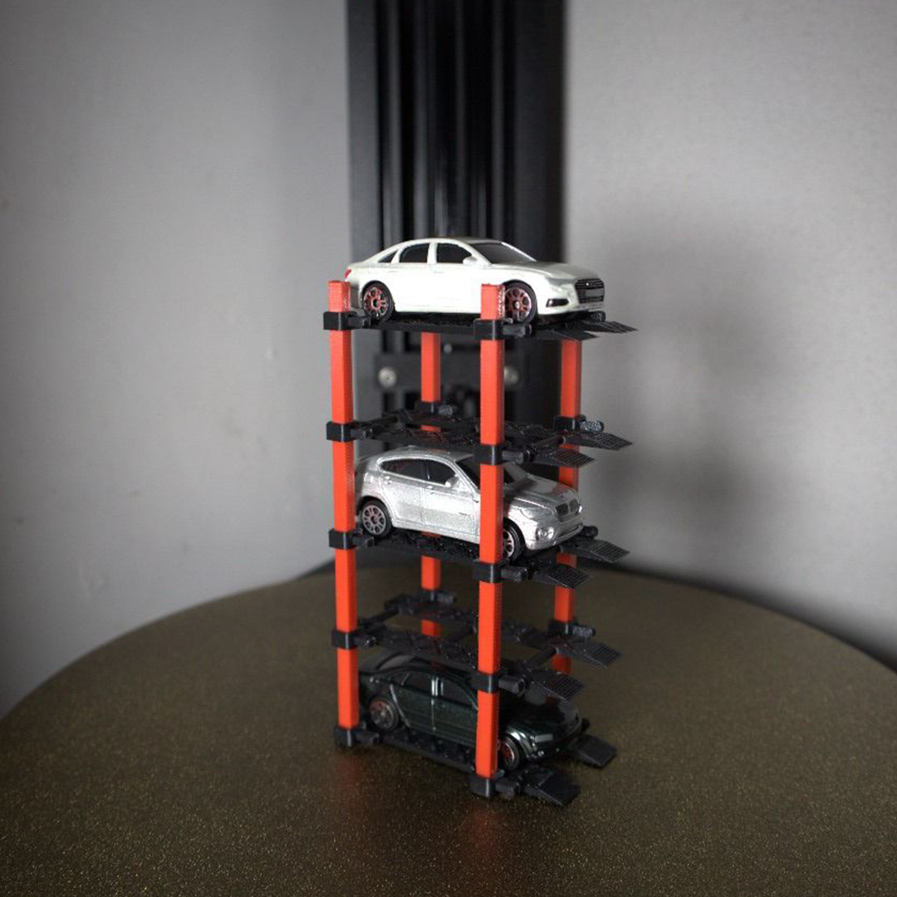
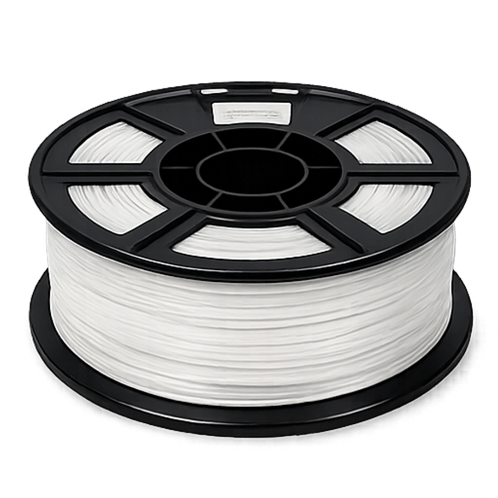
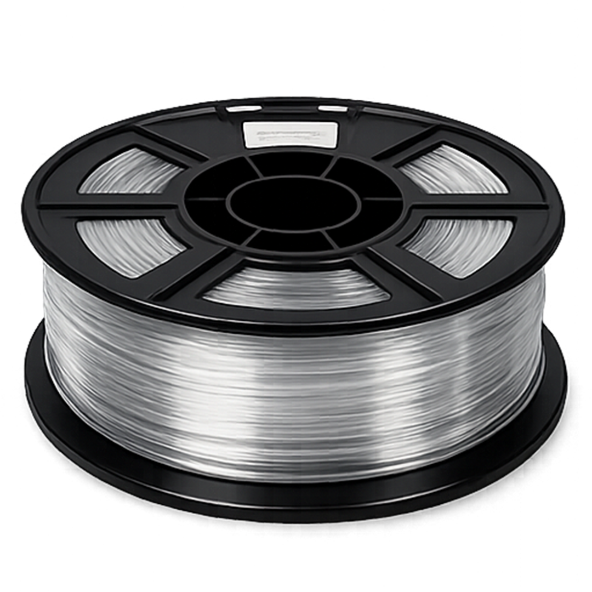

Piezas personalizadas
Objetos únicos construidos a partir de requerimientos reales.
Estudio de diseño y fabricación 3D
Alebri Studio transforma ideas en piezas tangibles con una combinación precisa de modelado, prototipado y producción en 3D. Cada proyecto se desarrolla con criterio material, claridad funcional y una mirada editorial.
Servicios
Objetos únicos construidos a partir de requerimientos reales.
Versiones de prueba para evaluar forma, escala y ensamble.
Piezas con vocación artística, utilitaria o editorial.
Respuesta material para problemas concretos y piezas útiles.
Series cortas con consistencia visual, técnica y temporal.
Portfolio
La galería propone composiciones escultóricas, prototipos y sistemas funcionales desde una misma materialidad monocromática.





Proceso
Contexto, uso esperado y una primera lectura formal del objeto.
Evaluación de geometría, material y viabilidad productiva.
Alcance, tiempos, acabados y decisión de formato de entrega.
Fabricación, control de pieza y cierre con criterio de estudio.
Materiales

PLA acabado limpio
PETG mayor resistencia TPU
flexibilidad controlada
TPU
flexibilidad controlada
Diferencial
No es impresión automática.
Cada pieza es un proyecto.
El estudio trabaja con criterio formal, ajustes reales y decisiones que afectan la presencia final del objeto. El resultado no busca parecer genérico; busca sentirse intencional.
FAQ
Una referencia visual, medidas aproximadas y el uso esperado suelen ser suficientes para iniciar el análisis.
No. El estudio puede desarrollar objetos estéticos, piezas funcionales, prototipos y pequeñas series.
Depende del uso final. PLA funciona bien para presencia visual, PETG para mayor exigencia y TPU cuando la flexibilidad es necesaria.
Sí. Se pueden preparar tirajes pequeños y medianos con control de consistencia, tiempos y acabados.
Contacto
Llevemos la pieza desde su intención inicial hasta una presencia física precisa.
Enviar mensaje